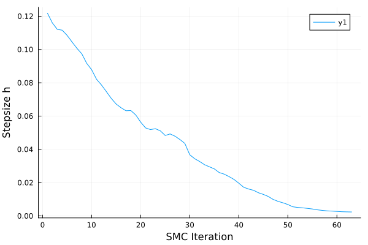

Kernel Adaptation
General Demo
We will use the Brownian motion example.
prob = BrownianMotion()
d = LogDensityProblems.dimension(prob)
prob_ad = ADgradient(AutoMooncake(; config=Mooncake.Config()), prob; x = randn(d))
nothingLet's setup the SMC annealing path.
n_iters = 64
proposal = MvNormal(Zeros(d), I)
schedule = range(0, 1; length=n_iters)
path = GeometricAnnealingPath(schedule, proposal, prob_ad)
nothingWe can use the incremental KL divergence minimizing adaptation by constructing the SMC sampler as follows:
sampler = SMCULA(path, BackwardKLMin(n_subsample=128, regularization=0.1))
nothingThen, adaptation is performed during SMC sampling:
n_particles = 1024
_, _, sampler, _, info = ControlledSMC.sample(
sampler, n_particles, 0.5; show_progress=false
)
nothingsample returns a sampler object with the adapted parameters:
Plots.plot(sampler.stepsizes, xlabel="SMC Iteration", ylabel="Stepsize h")
savefig("ula_stepsizes.svg")
nothingGKS: cannot open display - headless operation mode active
Note that the log normalizer computed during the adapted SMC run:
last(info).log_normalizer-13.461041742670842is a biased estimate due to adaptation. Therefore, to obtain unbiased estimates, it is necessary to run SMC once again with the adapted parameters:
_, _, _, _, info = ControlledSMC.sample(
(@set sampler.adaptor = nothing), n_particles, 0.5; show_progress=false
)
last(info).log_normalizer-14.968013679465933The biased log normalizer estimates will probably overestimate the normalizing constant by a margin decreasing with n_particles.
Metropolis-Hastings-Adjusted Kernels
We can also adapt the stepsizes of Metropolis-Hastings-adjusted kernels such as MALA. For instance, we can control the acceptance rate to follow the well-known optimal scaling heuristics:
sampler = SMCMALA(
path,
AcceptanceRateControl(
n_subsample=128,
regularization=0.1,
target_acceptance_rate=0.574
)
)
_, _, sampler, _, _ = ControlledSMC.sample(
sampler, n_particles, 0.5; show_progress=false
)
Plots.plot(sampler.stepsizes, xlabel="SMC Iteration", ylabel="Stepsize h")
savefig("mala_acc_stepsizes.svg")
nothingUnadjusted Hamiltonian Monte Carlo
Lastly, we can also adapt unadjusted generalized Hamiltonian Monte Carlo (ugHMC). Unlike ULA, ugHMC has two parameters: the stepsize and the refreshment rate. We tune both parameters in a coordinate-descent scheme, where the refreshment rate is optimized by an grid search. Let's first see the results under the default grid [0.1, 0.9].
sampler = SMCUHMC(path, BackwardKLMin(n_subsample=128, regularization=5.0))
_, _, sampler, _, _ = ControlledSMC.sample(
sampler, n_particles, 0.5; show_progress=false
)
Plots.plot(hcat(sampler.stepsizes, sampler.refresh_rates), layout=2, xlabel="SMC Iteration")
savefig("uhmc_params.svg")
nothingNow, the default grid is essentially a set of binary decisions: to refresh the momentum or to not refresh the momentum. This is a close approximation of the solution obtained under a finer grid:
sampler = SMCUHMC(path, BackwardKLMin(n_subsample=128, regularization=5.0), refresh_rate_grid=range(0.1, 0.9; length=16))
_, _, sampler, _, _ = ControlledSMC.sample(
sampler, n_particles, 0.5; show_progress=false
)
Plots.plot(hcat(sampler.stepsizes, sampler.refresh_rates), layout=2, xlabel="SMC Iteration", label=["stepsize" "refreshment rate"])
savefig("uhmc_params_fine_grid.svg")
nothingSee the distribution of the adapted refreshment rates:
Plots.histogram(sampler.refresh_rates, bins=range(0,1; length=16), normed=true)
savefig("uhmc_refresh_rates.svg")
nothingMost of them are concentrated on the extreme solutions. Therefore, a coarse grid like [0.1, 0.9] is an effective approximation.